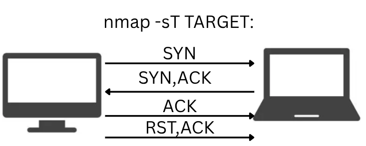
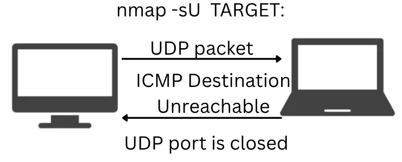

TCP connect, TCP SYN and UDP scan
the TCP connect scan works by completing the 3-way handshake. after, it sends a RST/ACK flag to tear it. for unprivileged users, this is the only way to discover open TCP ports.
it is more precise, but also it is easily detected by firewalls and such, because it completes the connection. the TCP connect scan can be used with -sT.


[tufescu@laptopdragos ~]$ nmap -p- -sT 192.168.1.4
Starting Nmap 7.97 ( https://nmap.org ) at 2025-09-01 19:02 +0300
Nmap scan report for 192.168.1.4
Host is up (0.017s latency).
Not shown: 65514 closed tcp ports (conn-refused)
PORT STATE SERVICE
21/tcp filtered ftp
22/tcp filtered ssh
23/tcp filtered telnet
25/tcp filtered smtp
111/tcp filtered rpcbind
113/tcp filtered ident
137/tcp filtered netbios-ns
138/tcp filtered netbios-dgm
139/tcp filtered netbios-ssn
143/tcp filtered imap
445/tcp filtered microsoft-ds
512/tcp filtered exec
513/tcp filtered login
514/tcp filtered shell
993/tcp filtered imaps
3306/tcp filtered mysql
3697/tcp open nw-license
7681/tcp open unknown
9080/tcp open glrpc
56789/tcp open unknown
56790/tcp open unknown
Nmap done: 1 IP address (1 host up) scanned in 40.00 seconds
the TCP SYN scan does not complete the 3-way handshake. it tears the connection after it receives a response from the target. it is stealthier, because it does not establish
a connection. it has less chances to be logged. the TCP SYN (stealth) scan can be used with -sS.
UDP is a connectionless protocol, so it does not require any handshake. we cannot guarantee that a service listening on a UDP port will reply, but if a UDP datagram will be
sent to a closed port, an ICMP port unreachable error will be returned. UDP scan can be used with -sU.

there are a few options for selecting which ports to scan:
- by default, nmap scans the most common(top) 1000 ports
-p1-10scans ports 1 - 10-p-scans all 65k ports-Fscans top 100 ports--top-ports 200scans top 200 ports